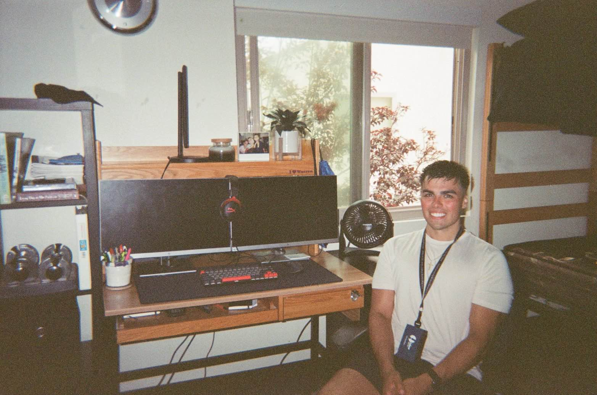

Gaussian Splatting in Slang
Implemented Gaussian Splatting using NVIDIA's Slang language, focusing on forward pass kernels and auto-differentiation.
View ProjectThis site showcases my projects, skills, and research at UCSD in computer science.
Implemented Gaussian Splatting using NVIDIA's Slang language, focusing on forward pass kernels and auto-differentiation.
View ProjectDeveloped a data science model to predict loan default risks using feature selection techniques and reducing demographic bias.
View Project